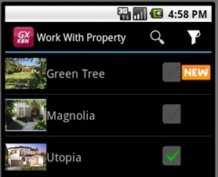

Server-side events, also known as System Events, include Start, Refresh, and Load.
Leaving aside the caching (for now you will assume no caching is enabled), two invocations to the server have to be done to load each layout on a device: one loads the plain part (also known as fixed-part), and the other loads the grid (if any). This means that two base tables could be involved (the fixed-part and the grid). Therefore, two data providers are internally created by GeneXus (shown in the navigation report). The first one will include in it the logic programmed into the Start and Refresh events, and the second one the logic of the Load event, respectively (as well as the conditions and orders specified in the "Conditions" selector).
Start event is executed the first time that a Panel object or a Work With for Smart Devices object node is opened on a device (further ahead you will see a Detail with a multiple-section case). It is not executed again unless the panel is excited and opened again.
Refresh event is executed following the Start (unless it is not the first time, in which case Start is not executed, and Refresh is). Since the navigation of the fixed part of the form and the grid are separated, each will have (if attributes) its Base Table. Therefore, the Refresh event accesses the fixed-part base table to get the plain information. Note that if there is no record meeting the conditions, then the Refresh event code will not run.
Grid information cannot be accessed inside the Refresh, except when the grid is based on an SDT.
Load event is the last of the system events executed. It is executed only if there is a grid on the layout. When the Grid has a Base Table, the Load event is executed as many times as registers of the base table exist, and if it is based on variables it is executed once, just as in a web panel. If the grid is based on an SDT variable, the Load event is not executed.
Remember that, as in any GeneXus object, variables defined within the objects are global inside it. So, a variable assigned into the Refresh event will be visible inside Load. However, the values assigned in the client will not be seen by the server. This is a temporary limitation. For values assigned in client to persist, you will have to call, inside the client event, a rest procedure (on web server) to save values in a session variable, in order to later get them in the Refresh or Load (for example, if the client event executes a Refresh command immediately). The same applies to variables inserted in the layout (as opposed to what occurs in the case of web panels).
To understand this better, see an example:
Suppose you have a Menu object that allows you to list all the real estate properties managed by a Real Estate Agency (calling the List node of the WWSD related to Property Transaction). As you call a List, its layout will have a grid, so the two data providers mentioned above will be created and executed for retrieving the data to be loaded onto the device screen.
What happens when the user calls this List of Properties?
It is important to point out the difference between a panel (like List or Detail) and a web panel: the fixed part and grid navigations are separated, and the screen corresponding to the fixed part is drawn independently from what occurs on the grid. If there are attributes, there will be two base tables. So, if you want to have all the loaded real estate properties displayed on the fixed part of the grid, you cannot do the same you would do in a web panel: add a &total variable set to 0 in the refresh, which is increased in the Load event every time it is run.
The fixed part of the Work With will be drawn before invoking the Data Provider that returns the lines, and therefore the variable will always show value 0. There is another problem with caching, but you can read Native Mobile Applications Caching.
So, a solution to show the number of records could be to add a For Each command in the Refresh event in order to count them.
You have to load a variable on the grid, depending on whether the Property received more than a specific number of visits, in order to classify it as one of the most visited. In addition, if the Property was listed during the last couple of days, you want to display an image indicating it is a new property

To do so, see the Load example.